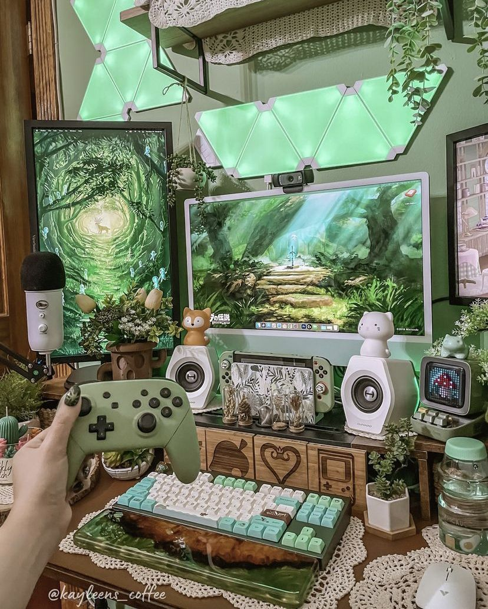

Gaming with Jamie
Hi my name is Jamie and I love to play video games! I created this site to share my love for games and to inform others about some of my absolute favorite games. I've been playing video games since I could first hold a controller and use the computer at 3. My favroite console is a tie between the PlayStation 2 and the GameCube. My favorite handheld is also a tie between the GameBoy Advance SP and the PSP. Picking only four games to write on was very difficult especially since I play a variety of games from racing, indie, RPGs, and fighting, a few games that didn't make it are; We ♥ Katamari, Super Mario Sunshine, and Guitar Hero 3. Thank you for taking the time to come and learn about my favorite games, happy gaming!
